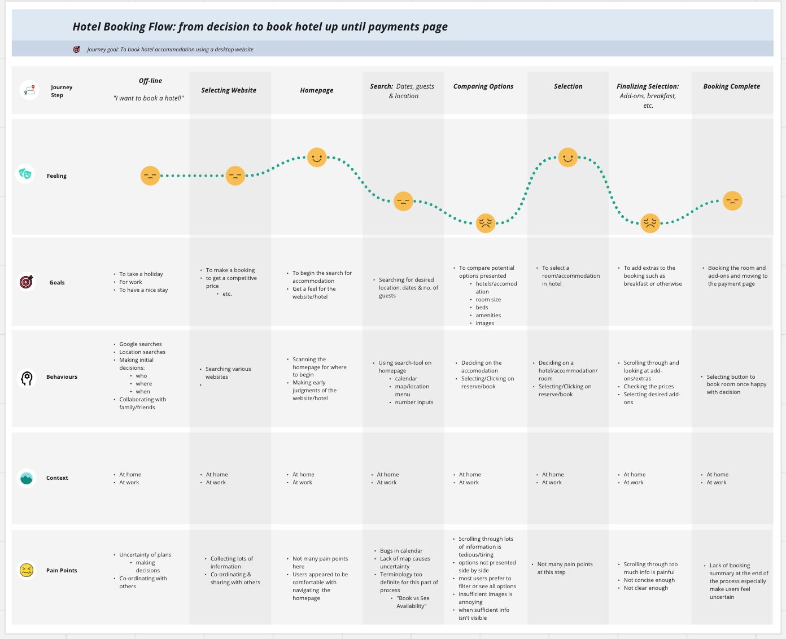
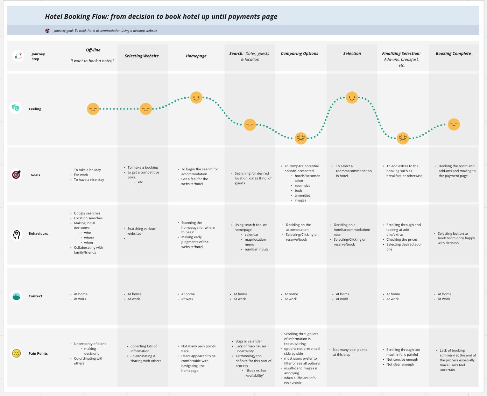

The Problem
Many hotel booking websites suffer from poor usability, frustrating users with confusing navigation, unclear information, and inefficient booking processes.
The goal was to create a website that prioritises intuitive design, clarity, and efficiency, delivering a smoother and more pleasant booking experience.


 
